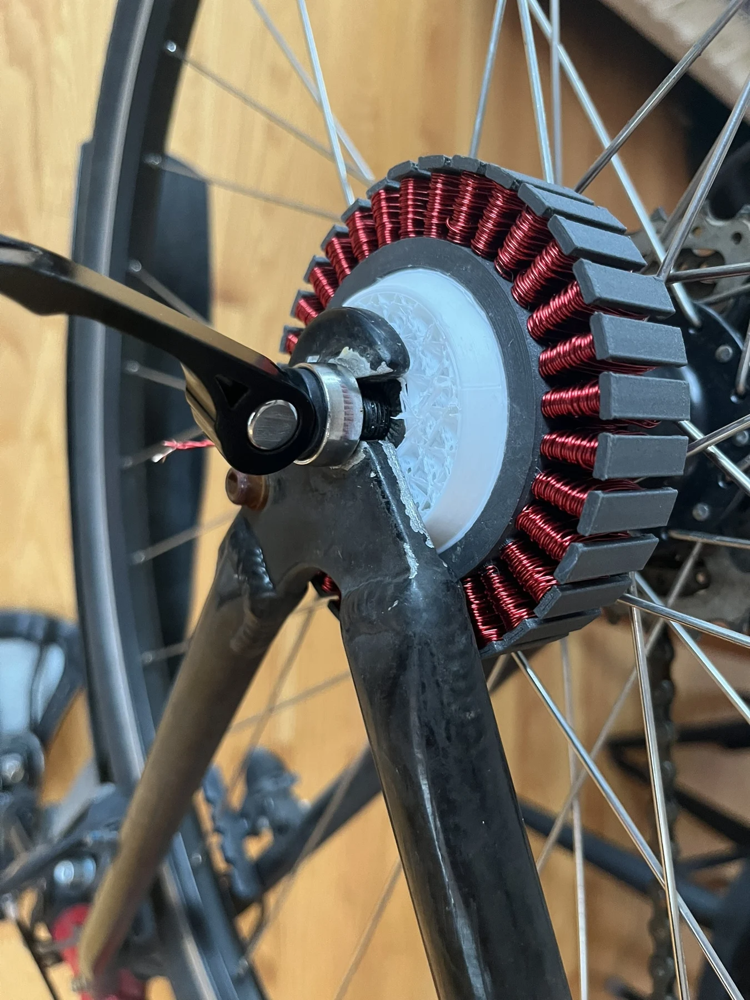

Desktop CNC / PCB mill
Building the tool behind the projects: a compact, 3D-printed machine for milling custom circuit boards.
Custom motor control, a printed hub motor, and a simple goal: make electric transportation more accessible.

I wanted to make electric transportation more affordable by converting a bicycle someone already owns. I set a materials-cost target below $150, with a stretch goal below $100, and split the kit into rider controls, a removable battery and electronics enclosure, and a motor.
I designed the control board, battery housing, mounting system, and experimental brushless motor. The electronics brought together a custom brushless speed controller, an Arduino-based prototype, Bluetooth communication, and a thumb throttle. PETG housings and TPU seals were part of the enclosure design; these were prototype design choices, not a certified ingress-protection rating.
I initially manufactured the PCBs on my homemade CNC mill. Without solder mask, dense boards were difficult to assemble reliably. After more than 50 attempts, I stepped back and changed the process: outsourcing board fabrication and using integrated gate drivers. The lesson was to recognize when my tools had become the constraint.
Bench tests demonstrated motor control with a small brushless motor, back-EMF sensing, throttle input, and Bluetooth data exchange with an iPhone. I also built and tested an iron-filled PLA motor with a Halbach magnet arrangement. The printed motor turned, but heat softened the plastic under load. The supplied build videos include bench demonstrations and an outdoor bicycle test; those prototype tests do not establish a finished, road-ready kit.
The next step was to replace the printed stator with a conventional laminated metal core while keeping the custom electronics and enclosure. My 2024 component tally was $82.74 excluding the motor; that was a historical prototype estimate, not a retail price or a complete production bill of materials.
Select any photo to open the full-size gallery.


Building the tool behind the projects: a compact, 3D-printed machine for milling custom circuit boards.
A project exploring custom drives with an emphasis on cost.